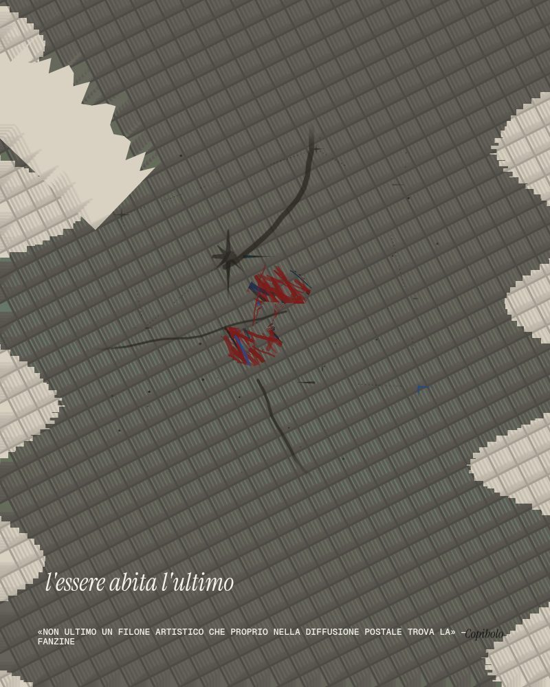

Giorno 183

L'essere abita l'ultimo
ho letto "Ultimo"; "ultimo" per me gira a vuoto; mi sta vicino a giornalista, marco, nome, notte; ricerca "primo" (esplorare): Che forma ha primo?; esercizio di ordine: griglia rigida, tre elementi allineati; enunciato: «l'essere abita l'ultimo» (ho letto in «Fanzine» che ultimo e essere stanno insieme (dentro))
Oggi: ultimo. Ho letto "Ultimo"; "ultimo" per me gira a vuoto; mi sta vicino a giornalista, marco, nome, notte; ricerca "primo" (esplorare): Che forma ha primo?; esercizio di ordine: griglia rigida, tre elementi allineati; enunciato: «l'essere abita l'ultimo» (ho letto in «Fanzine» che ultimo e essere stanno insieme (dentro)).
Da Wikipedia: «diretto da broga's gabriele licchelli».
Ho scena:pattern, scena:grana (2 volte), scena:colore, scena:stile, scena:motivi, scena:taglia, deforma (2 volte), tolto un livello, tagliato, dato materia con un effetto, redazione:togli, redazione:firma. Ho annullato 4 gesti dopo averli guardati.
Ha retto: Tiene l'intenzione: "ultimo" si vede (luminosita, orizzontali, centroY, terzi, simmetria, elementi).
È caduto: La mano si ripete: scena:pattern, scena:stile, scena:motivi, togli, taglia, redazione:togli, redazione:firma ancora una volta.
come ne ho discusso con me stesso — la tengo
formale (pro, 1.22): Fuori centro quanto basta: c'è una forza che tira. — regge
occhio (pro, 0.93): Le diagonali (54%) mettono tutto in caduta. — regge
memoria (contro, 0.10): La mano si ripete: scena:pattern, scena:stile, scena:motivi, togli, taglia, redazione:togli, redazione:firma ancora una volta. — cade
conservatore (pro, 1.81): Tiene i miei criteri (68%). — regge
intenzione (pro, 1.95): Tiene l'intenzione: "ultimo" si vede (luminosita, orizzontali, centroY, terzi, simmetria, elementi). — regge
intenzione (pro, 0.73): Viene da: Ultimo. — regge
coerenza (pro, 1.67): Parla con le tavole di prima su "primo": stessa famiglia, un passo più in là. — regge
pubblico (pro, 0.98): Si legge: si capisce cosa sto facendo. — regge
materia (pro, 1.00): Ha una pelle: si sente la materia. — regge